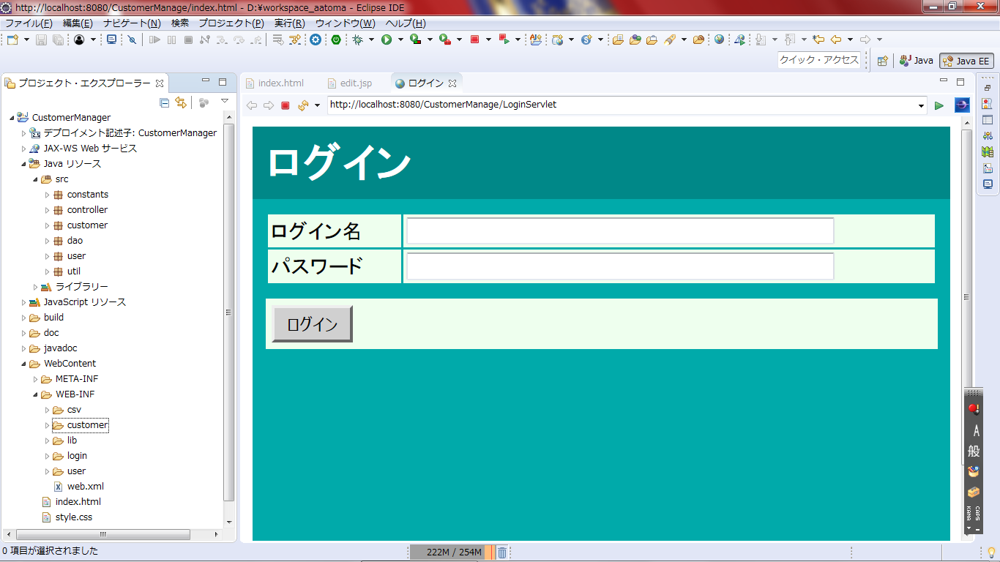
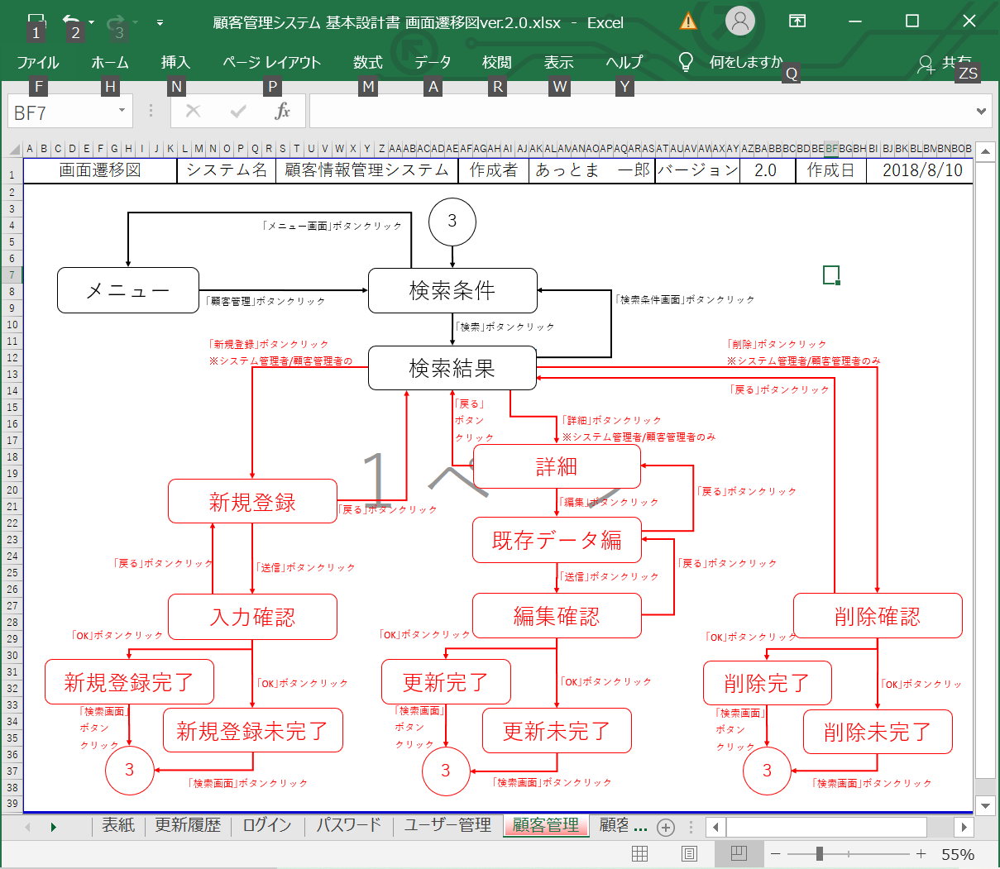
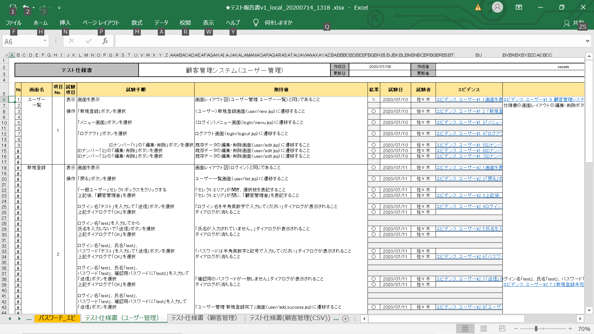

顧客管理システム

eclipseで開発

画面遷移図に基づいてコーディング

テスト仕様書も作成
作品プロフィール
使用言語：JavaEE(サーブレット・JSP)
開発環境：eclipse
データベース：Oracle Database
概要：
小規模なシステム開発を２週間の企業実習で行いました。
環境構築から始まり、用意されている要件定義書、詳細設計書、テーブル定義書、クラス図、ER図、画面遷移図、画面レイアウト図を読み込んで工程表を作成、コーディング、テスト仕様書作成、テスト実施、コード修正、再テスト、納品と、システム開発の流れを一通り経験しました。
ログイン/ログアウト、ユーザー権限による制限機能、パスワードの暗号化、CSVファイルの一括処理/エクスポート、MVCモデル、データーベースへの接続、DAOパターンなど、WEBアプリの一通りの構造が実装されています。
慣れない資料の読み込みにも苦労しましたが、一番難しいのは同じチームのメンバーとコミュニケーションを取りながら作業を進めることでした。どんな仕事でもそのことが一番重要だと実感しました。
戻る